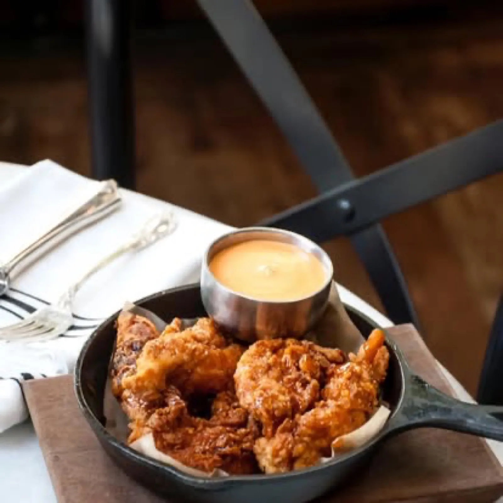
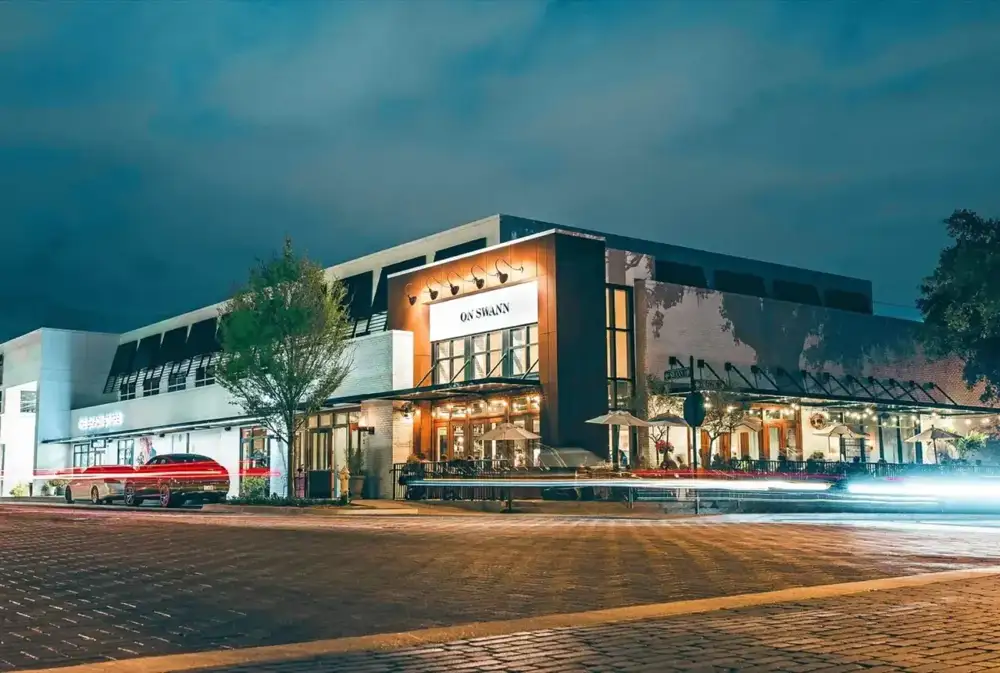
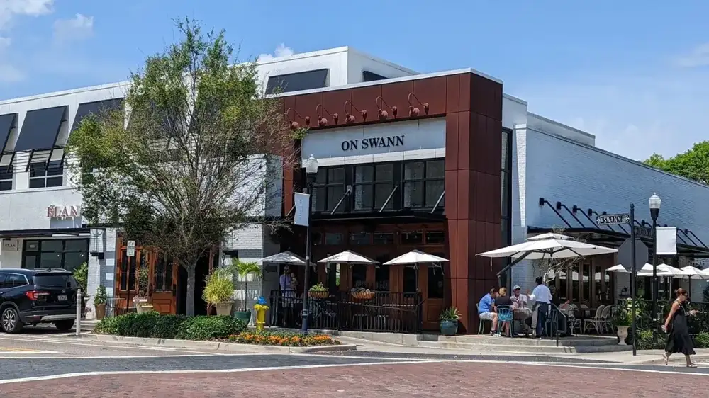

Dinner
Saffron arancini, scallops with Brussels sprouts, steak frites and beef carpaccio.
Hyde Park Village · Tampa

Hours Mon · 11 AM–2 PM, 5–10 PMTue · 11 AM–2 PM, 5–10 PMWed · 11 AM–2 PM, 5–10 PMThu · 11 AM–2 PM, 5–10 PMFri · 11 AM–2 PM, 5–11 PMSat · 10 AM–2 PM, 5–11 PMSun · 10 AM–2 PM, 5–10 PM
1501 W Swann Ave, Tampa, FL 33606
Contemporary American on W Swann Ave. Kale salad, cocktails and warm service.
Lunch, dinner and weekend brunch
A seasonal menu with local flair, served at the bar or a table, indoors or out.
Saffron arancini, scallops with Brussels sprouts, steak frites and beef carpaccio.

Chicken salad, short rib hash and other lunch plates.

Brunch Saturday and Sunday. Donuts and desserts too.





4.6 ★ · 2613 Google reviews
On Swann consistently came up as a top restaurant choice in all the social media posts I’ve seen so we finally made it here and it did not disappoint. The atmosphere is charming and upbeat with indoor and outdoor seating. We had a reservation and were seating promptly. Our server Kristin was very friendly, attentive and did a fantastic job. The cocktails were great.
I celebrated my birthday here last night, and everything was perfect. Our server was warm and welcoming, providing attentive and meticulous service throughout the meal. The food was delicious, the kale salad was the best I’ve ever had, and every dish was satisfying!
Loved this place. Very trendy and great vibe. Our bartender Neal was what made the experience great. Very kind, excellent attention And service! Drinks were excellent! Charcuterie board and donuts were great but what made it wonderful was Neal. Great addition to make customers feel welcome! We will absolutely be back and hope we get Neal again!!

Our story
On Swann opened May 29, 2016 in Hyde Park Village. The interior reflects the hip feel of the neighborhood while paying tribute to Tampa's storied past.
Watch the cooking from the open-kitchen dining room. Executive Chef and partner Chris Ponte leads the kitchen with co-founders John Cooper, Trudy Cooper, Chris Arreola and Michelle Ponte.
Visit
1501 W Swann Ave, Tampa, FL 33606
Reservations are easy to make and walk-ins have been seated for lunch. Indoor and outdoor seating.